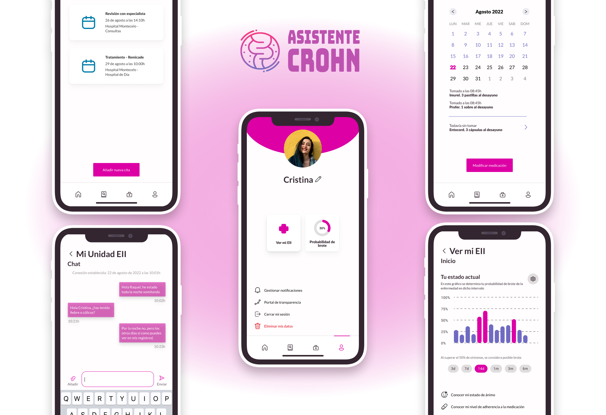

Asistente Crohn
Asistente Crohn es una aplicación móvil para pacientes con enfermedad de Crohn y colitis ulcerosa. La aplicación proporciona herramientas útiles para el seguimiento y gestión de la enfermedad, así como recursos para mejorar la calidad de vida de los pacientes.
Recursos
Visita nuestro perfil en Linktree para acceder a recursos y enlaces útiles:
https://linktr.ee/asistentecrohnLogros de prensa
Asistente Crohn ha sido destacada en diversos medios de comunicación, incluyendo:
- El País
- El Mundo
- ABC
Primera versión de la aplicación
La primera versión de Asistente Crohn se lanzó en 2020. Incluía las siguientes funcionalidades:
- Registro y seguimiento de síntomas y medicación.
- Calendario de citas médicas.
- Recursos de información y apoyo para pacientes.

Versión en desarrollo
Actualmente estamos trabajando en la siguiente versión de Asistente Crohn, que incluirá las siguientes mejoras:
- Nuevos módulos y diseño renovado.
- Recomendaciones personalizadas basadas en los datos recogidos.
- Acceso a tus registros por parte de tu Unidad EII.

